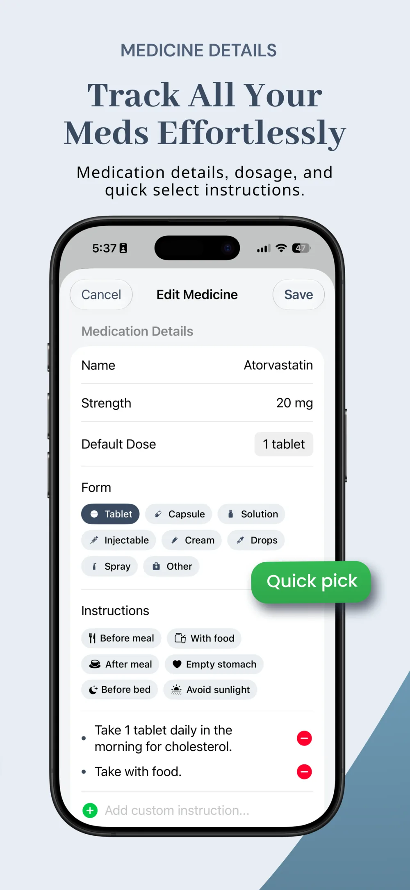

Best Time of Day to Take Vitamin D3 with Food: Morning or Night?
Vitamin D3 (cholecalciferol) is one of the most widely consumed dietary supplements in the world, playing a critical role in bone mineral density, immune modulation, hormone synthesis, and cardiovascular health.
However, despite taking high daily doses, millions of adults fail to optimize their circulating 25-hydroxyvitamin D [25(OH)D] levels. The reason is rarely the dosage itself—it is dosing timing and meal composition. Understanding the biological mechanisms behind fat solubility, circadian rhythms, and cofactor synergy is essential to getting the full benefit from every microgram.
| Timing & Stack Condition | Serum Absorption / Bioavailability | Physiological Mechanism | Recommended Pairing Protocol |
|---|---|---|---|
| Morning with Breakfast (10–15g Fat) | Optimal (100% baseline) | Syncs with circadian cortisol rise; micellar emulsification ensures full intestinal uptake | Eggs, avocado, whole-milk yogurt, or olive oil drizzle |
| Midday with Lunch | High (90–95%) | Ideal for intermittent fasters skipping morning meals; aligns with active digestion | Salmon, nuts, olive oil salad dressing, or meal with K2 |
| Late Evening / Bedtime | Suboptimal & Disruptive | Blunts nighttime melatonin synthesis; can trigger sleep fragmentation and delayed sleep onset | Shift to morning; take evening magnesium glycinate instead |
| Fasted (Empty Stomach) | Poor (~30–50% loss) | Fat-soluble vitamins require bile acid secretion and lipid micelles for enterocyte uptake | Always consume with a dietary fat source |
1. Why Dietary Fat is Mandatory for Vitamin D3 Absorption
Vitamin D is fundamentally a secosteroid fat-soluble vitamin. Unlike water-soluble vitamins (such as Vitamin C and B-complex) that dissolve directly into bloodstream fluids, Vitamin D3 requires bile acid emulsification and mixed micelle formation in the proximal small intestine before it can be absorbed across the intestinal brush border into lymphatic circulation.
A landmark clinical trial published in the Journal of Bone and Mineral Research revealed that subjects who took Vitamin D with their largest, fat-containing meal of the day achieved an average 50% increase in serum 25(OH)D levels after three months compared to those who took the exact same dose on an empty stomach or with a fat-free meal.
- The 10–15 Gram Threshold: You do not need a greasy meal. Approximately 10 to 15 grams of healthy lipid—equivalent to two eggs, half an avocado, a tablespoon of extra virgin olive oil, or a handful of almonds—is sufficient to stimulate gallbladder contraction and maximize uptake.
- Fasting Mistake: If you practice 16:8 intermittent fasting and skip breakfast, taking your Vitamin D upon waking with black coffee is virtually wasted. Delay your dose until your first meal window opens.
2. Circadian Rhythm: Does Vitamin D Cause Insomnia at Night?
In evolutionary biology, Vitamin D is produced when intense ultraviolet B (UVB) sunlight strikes the skin—an event that naturally occurs only between 10:00 AM and 3:00 PM. The human circadian clock has evolved to interpret elevated systemic Vitamin D synthesis as a daytime cue.
Clinical chronobiology studies indicate that Vitamin D receptors exist in the pineal gland, the brain region responsible for secreting melatonin (the master sleep hormone). Ingesting large supplemental doses of Vitamin D3 late in the evening can suppress nocturnal melatonin synthesis, resulting in restless sleep, frequent awakenings, or delayed sleep onset. For optimal sleep architecture, always take your Vitamin D3 before 2:00 PM.
Built into Supplement & Pill Reminder
Organize your full vitamin stack with custom notes
Add instructions like 'Take with fat-containing meal' directly to your vitamin cards on iOS.
Track Your Vitamin D3+K2 Stack Free →
3. The Vitamin D3 and K2 Synergy: Guiding Calcium to Bones
Taking Vitamin D3 in isolation—especially at doses above 2,000 to 5,000 IU daily—can create a hidden metabolic hazard. Vitamin D substantially increases the intestinal absorption of calcium. Once calcium enters the bloodstream, it requires a navigation system to ensure it deposits into bones and teeth rather than arterial walls.
This is where Vitamin K2 (specifically the menaquinone-7 / MK-7 isomer) serves an indispensable synergistic function:
- Osteocalcin Activation: Vitamin K2 carboxylates and activates osteocalcin, the primary protein matrix that binds calcium ions into bone crystals.
- Matrix Gla Protein (MGP) Activation: K2 carboxylates MGP in arterial walls, actively inhibiting vascular calcification, arterial stiffness, and kidney stone formation.
4. The Missing Magnesium Cofactor
Another common reason for stagnant Vitamin D blood tests is magnesium deficiency. Every enzyme responsible for metabolizing Vitamin D—from 25-hydroxylase in the liver to 1-alpha-hydroxylase in the kidneys—is strictly magnesium-dependent. If your cellular magnesium stores are depleted, supplemental Vitamin D remains stored and biologically inert.
To support this pathway, combine your morning Vitamin D3+K2 routine with an evening dose of chelated magnesium, as detailed in our clinical magnesium glycinate timing protocol, which also promotes restful sleep.
Frequently Asked Questions
What is the best time of day to take vitamin D3 with food?
The best time of day to take Vitamin D3 is in the morning or early afternoon with a meal containing 10 to 15 grams of dietary fat (such as eggs, avocado, nuts, or olive oil). This maximizes intestinal absorption and prevents circadian sleep disturbances.
Why should you take vitamin D with dietary fat?
Vitamin D is fat-soluble. It requires the presence of dietary lipids in the stomach to trigger bile acid release from the gallbladder. Bile emulsifies the vitamin into micelles so intestinal cells can absorb it. Taking Vitamin D without fat can reduce absorption by 30% to 50%.
Why should vitamin D3 always be paired with vitamin K2?
Vitamin D3 enhances calcium absorption into the bloodstream, while Vitamin K2 (MK-7) activates osteocalcin to bind that calcium into bones and activates Matrix Gla Protein to prevent calcium from depositing into arteries and soft tissues.
Does taking vitamin D3 at night cause insomnia?
Yes, taking Vitamin D3 late in the evening can disrupt sleep for many people. Receptors in the pineal gland respond to high circulating Vitamin D by downregulating melatonin production, leading to delayed sleep onset and lighter, fragmented sleep.